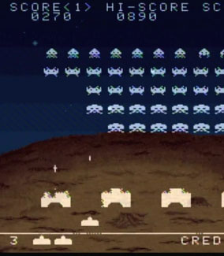

Unity Manual>Advanced>Practical Guide to Optimization for Mobiles>Practical Guide to Optimization for Mobiles - Scripting and Gameplay Methods
Practical Guide to Optimization for Mobiles - Scripting and Gameplay Methods
This section demonstrates ways that mobile developers write code and structure their games so that they run fast. The core idea here is that game design and optimization aren't really separate processes; decisions you make when you are designing your game can make it both fun and fast.
A historical example

You may remember old games where the player was only allowed one shot on the screen at a time, and reload speed was controlled by whether the bullet missed or not, instead of a timer. This technique is called object pooling, and it simplifies memory management, making programs run smoother.
The creators of space invaders only had a small amount of RAM, and they had to ensure that their program would never need to allocate more than was available. If they let the player fire once every second, and they offered a powerup that decreased the reload time to a half a second, they would have to ensure that there was enough memory space to allocate a lot of projectiles in the case where the player fires as fast as possible and all of the shots live for the longest possible time. That would probably pose a problem for them, so instead, they just allocated one projectile and left it at that. As soon as the projectile dies, it is simply deactivated, and repositioned and activated when it is fired again. But it always lives in the same space in memory and doesn't have to move around or be constantly deleted and recreated.
An optimization, or a gameplay gem?
This is hardly realistic, but it happens to be fun. Tension is released in a climactic moment when the alien invaders approach the ground, similar to a climax in film or literature. The invaders' close proximity gives the adept player near-instantaneous reload time, allowing them to miraculously defend earth by mashing the fire key in perfect time. Good game designs live in a bizarre space between the interactive narrative and the background technology that powers it all. It's hard to plan out awesome, fun, efficient stuff like this, because code logistics and user interaction are two wildly different and deeply finicky things, and using them together to synthesize something fresh and fun takes a lot of thought and experimentation.
You probably can't plan out every aspect of your game in terms of interaction and playing nice with mobile hardware simultaneously. It's more likely that these "gems" where the two meet in harmony will pop up as accidents while you're experimenting. But having a solid understanding of the way your code runs on the hardware you intend to deploy on will help. If you want to see the detailed technical explanation of why object pooling is better, and learn about memory allocation, see our Scripting Optimizations page.
Will X run fast on Mobiles?
Say you are beginning to work on a game, and you want to impress your players with lots of action and flashy stuff happening at once. How do you plan those things out? How do you know where the limits are, in game terms like how many coins, how many zombies, how many opponent cars, etc? It all depends on how you code your game.
Generally, if you write your game code the easy way, or the most general and versatile way, you will run into performance issues a lot sooner. The more you rely on specific structures and tricks to run your game, the more horizons will expand, and you will be able to cram more stuff on screen.
Easy and versatile, but slow
- Rigidbodies limited to 2 dimensions in a 2D game.
- Rigidbodies on projectiles.
- Using Instantiate and Destroy a lot.
- Lots of individual 3D objects for collectables or characters.
- Performing calculations every frame.
- Using OnGUI for your GUI or HUD.
Complicated and limited, but faster
- Writing your own physics code for a 2D game.
- Handling collision detection for projectiles yourself.
- Using Object Pooling instead of Instantiate and Destroy.
- Using animated sprites on particles to represent simple objects.
- Performing expensive calculations every few frames and caching the results.
- A custom GUI solution.
Examples

Hundreds of rotating, dynamically lit, collectable coins onscreen at once
- NO: Each coin is a separate object with a rigidbody and a script that rotates it and allows it to be picked up.
- YES: The coins are a particle system with an animated texture, one script does the collision testing for all the coins and sets their color according to distance from a light.
- This example is implemented in the Scripting Optimization page.
Your custom-built soft-body simulation
- NO: The world has pillows lying around everywhere, which you can throw around and make piles of.
- YES: Your character is a pillow, there is only one of them, and the situations it will be in are somewhat predictable (It only collides with spheres and axis-aligned cubes). You can probably code something which isn't a full-featured softbody simulation, but looks really impressive and runs fast.
30 enemy characters shooting at the player at once
- NO: Each enemy has his own skinned mesh, a separate object for his weapon, and instantiates a rigidbody-based projectile every time he fires. Each enemy takes the state of all of his compatriots into account in a complicated AI script that runs every frame.
- YES: Most of the enemies are far away, and are represented by single sprites, or, the enemies are 2D and are just a couple sprites anyway. Every enemy bullet is drawn by the same particle system and simulated by a script which does only rudimentary physics. Each enemy updates his AI state twice per second according to the state of the other enemies in his sector.
The how and why of script optimization
See our page on Optimizing Scripts.
Page last updated: 2012-11-06